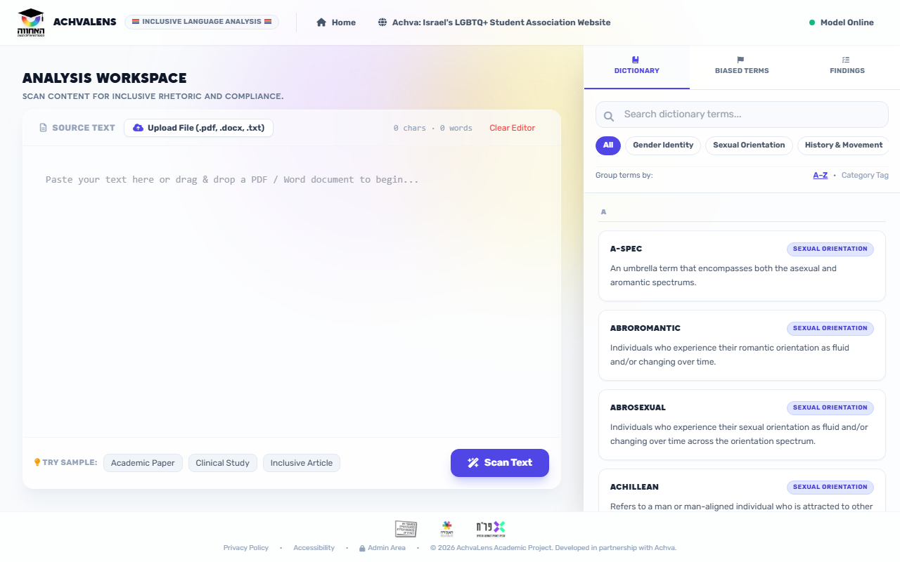

Work.
Things I've built and investigated. Each one started with a problem someone actually had.

AchvaLens
Built for Achva LGBT. You paste in an academic text and it marks LGBTQ+ terminology as fine, worth reconsidering, or harmful. The middle category was the hardest. Automated prompt optimization raised overall accuracy.
Mercury
A privacy audit of a medical chatbot. A stranger's private health details could end up in your answer, just by asking a similar question. I traced it to one missing check and mapped the fixes to GDPR.

State, Not Trait
Do people hold steady values, or does it depend on how you ask? I analyzed 42 players of a democracy simulation game. It depends. I also built an AI grader for 480 written answers that agreed with two experts about as well as they agreed with each other.
More projects
Shorter stories.
SugarBuddy
A family app for teens with Type 1 diabetes: glucose alerts, an AI that helps figure out what happened, and a community.
SugarBuddy Agent
When a glucose reading looks wrong, the agent asks the teen a few questions and gives the parent a calm summary instead of an alarm.
Between the Lines
A hackathon project with The Israeli Center for Educational Innovation. I helped define the problem and the solution with the partner, then built the app. It raises teachers' motivation through recognition and clear expectations, together with their coaches.